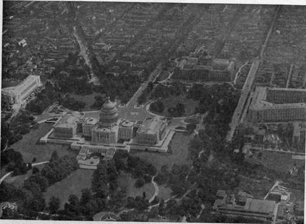

Methods And Apparatus For Oblique Photography
Description
This section is from the book "Airplane Photography", by Herbert E. Ives. Also available from Amazon: Airplane photography.
Methods And Apparatus For Oblique Photography
The simplest method of taking oblique pictures from a plane is to use a hand camera pointed at the desired angle. Its limitations are in the size and scale of the picture obtainable, and in the inherent limitations to the method of camera support. A step in advance of this is to mount the camera above the fuselage, on the machine gun ring or turret, in place of the gun. Considerably greater rigidity is thus obtained, and heavier cameras can be utilized, although the wind resistance is a serious factor. Excellent obliques have been made in this way, even with 50-centimeter cameras, but the scheme is impractical in military planes, because of the removal of machine gun protection.
Fig. 145. - Oblique view of Capitol and Congressional Library, Washington.

Fig. 146. - Fort Alvenslegen, near Metz, Photo by Photographic Section A. E. F.
If the camera is fixed in the fuselage in its normal vertical position, obliques may be and have been taken by the simple expedient of banking the plane steeply. This is not to be recommended as a standard procedure, especially for taking a consecutive series of exposures.
The most satisfactory arrangements for taking obliques are two; first, to mount the camera obliquely in the plane, and second, to use a mirror or prism, in front or behind the lens of the vertically mounted camera. The first method has been employed chiefly by the French, the latter by the English, whose gravity fed cameras could not be mounted obliquely.
Taking up first the oblique mounting of cameras, we find two ways of doing this: longitudinal mounting and lateral mounting. In longitudinal mounting the camera projects forward and downward, usually from the nose of a pusher or bi-motored plane. With this form of mounting (Fig. 147) it is necessary of course to fly directly toward the objective. If this is a portion of enemy trench, which must be photographed from a height of 400 or 500 meters, the plane will be directly on top of its objective a few seconds after the exposure is made, and be a conspicuous target, in imminent danger of destruction. Moreover, only a single short section of the trench would be obtained for each crossing of the line. The one case where resort to this method is practically forced is with the 120-centimeter cameras which simply cannot be slung athwart the plane. There is a slight advantage in this method of carrying in that the motion of the image is less if the objective is approached, instead of being passed at the side, and so longer exposures can be made. The longitudinal mounting has, however, been very generally superseded by the lateral.
Methods for mounting cameras obliquely for taking pictures through the side of the plane have been discussed in detail in connection with camera mountings and installations (Eig. 93). The chief difficulties are want of space, obstacles at the side such as control wires and longerons, and failure of the camera to function properly at an angle. Even in the broad circular sectioned fuselage of the Salmson plane, quarters are so cramped that the French 50-centimeter camera when obliquely mounted cannot be used with the 12-plate magazine, and recourse is made to thin flat double plate-holders. Holes in the side of the fuselage should.clear all wires and should command a view unobstructed by the wings—which often means that the camera must be carried behind the observer's cockpit, irrespective of the suitability of that space from other standpoints. Cameras dependent for their action on gravity, such as the deRam and English L type, are unsuited for oblique suspension.
Fig. 147. - 120-centimeter camera mounted obliquely in the fore-and-aft position.
For cameras which, because of their method of operation or shape cannot be slung obliquely, the only way to take obliques is to employ mirrors (Fig. 148) or prisms. These must be of the same optical quality as the photographic lens. They are both necessarily of considerable weight because they must be of large area of face to fill the entire aperture of an aerial lens. Mirrors are lighter than prisms, but must be quite thick to prevent distortion of the surface due to any possible strains to their mount. Right angle glass prisms have been used by the English with the 8 and 10 inch L cameras. The prisms were uniformly tilted to an angle of 12 1/2 degrees from the horizontal.
Glass mirrors can be silvered either on the rear or front surface. If on the rear, both surfaces must be accurately parallel, which means much greater labor and expense than if the front surface can be utilized. The difficulty with front surface mirrors is that the metallic coating is easily tarnished or scratched, especially if silver is used, which is almost imperative, since all the other metals have considerably lower reflecting powers. (Gold might serve both as mirror and color filter, because of its yellow color.) Placing the mirror inside the camera body in part obviates this trouble, but means the use of a special elbow lens cone. In any case the mirror or prism occasions at least a 10 per cent, loss of light. Pictures taken by reflectors of any kind are reversed, and must either be printed in a camera, or on transparent film which may be viewed from the back.
Fig. 148. - Mirror on camera cone for taking oblique views.
The most usual condition for making obliques is to fly very low (300 to 600 meters), with the line of sight of the camera from 12 to 45 degrees from the horizontal. This low altitude necessitates very short exposures, to avoid movement of the image. The picture may be taken either the long or the short way of the plate, depending on the character of the object and the information desired. It is to be noted that successive oblique pictures cannot be mounted to form a continuous panorama—this being possible with obliques only if they are taken from one point, as from a captive balloon. If successive views are made on a straight flight at intervals so as to exactly juxtapose in the foreground, they overlap by a large margin the middle, and a point on the horizon, if that shows, will be in the same position in every picture. Mosaics of obliques could be made only by some system of conical mounting.
Continue to:
- prev: Chapter XXVII. Oblique Aerial Photography
- Table of Contents
- next: Sights For Oblique Photography
Tags
camera, lens, airplane, aerial, film, exposure, photography, maps, birdseye